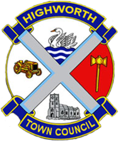

A town on the hill
Long before it had a name, Highworth had a view. The town sits on one of the highest points for miles, looking out over the Upper Thames valley.
Four thousand years of settlement
People have lived on this hilltop more or less continuously for over 4,000 years. Archaeologists have found Bronze Age remains and evidence of Roman activity in and around the town. It is easy to see why: the hill, about 133 metres (436 feet) up, is a natural place to settle, with farmland and water in the valleys below.
'Wrde' in the Domesday Book
By Saxon times this was the centre of a royal estate, where the courts of the hundred of Worth met every four weeks, and a minster church stood here by the 11th century. The Domesday Book of 1086 records the place as 'Wrde' — from the Old English 'worth', meaning an enclosure — with six households and a church. The 'High' was added around 1200, for the obvious reason: this is a town you climb up to.
The view that drew the Bronze Age settlers is still here, and still free. Our walks page will point you to the best of it.
1206: a charter from King John
Highworth's defining moment came on 20 April 1206, when King John granted the town its market charter. The market it created is still trading more than 800 years later.

Warin FitzGerold and the market charter
The charter was granted to Warin FitzGerold, lord of the manor of Sevenhampton, whose family had held the hundred of Highworth since 1156. As hereditary chamberlain to King Richard and then King John — his name appears on Magna Carta — he had the influence at court to secure it. The charter gave Highworth a weekly Wednesday market and an annual fair on the eve and feast of St Michael (29 September). It is among the earliest market charters in Wiltshire, possibly the tenth oldest.
Wool, fairs and a crowded market place
A second fair, on the feast of St Peter ad Vincula (1 August), was granted by Henry III in 1257 to FitzGerold's great-grandson Baldwin de Redvers. The medieval market place was far bigger than today's — the buildings now in its centre are later 'infill', a sign of just how successful the town became. Highworth was busy in the wool and cloth trade too: records mention mercers, staplers, fullers, dyers and shearers, and in 1365 Thomas Hungerford was careful to keep hold of 'a shop called Shereresshoppe in Heygworth' when he gave away his other land.
Boom — then the long slump
By 1607 Highworth had at least twelve inns, and by the mid-1600s its cattle market was the largest in Wiltshire. Then came disaster: plague in the 1630s drove traders to neighbouring towns, and the Civil War finished the job. Writing in 1672, John Aubrey noted that Swindon's 'gallant markett for cattle... increased to its now greatnesse upon the plague of Highworth'.
Still trading: the market King John chartered lives on as today's Saturday market in the Market Place. See our market page for what's on the stalls this week.
St Michael's and the Civil War
The parish church of St Michael and All Angels has watched over the town since before the Normans counted it — and it carries a battle scar to prove how dramatic its history has been.

St Michael and All Angels Church
Grade I listed Pre-DomesdayA church stood here by the time of the Domesday Book, and a carved tympanum of about 1150 — thought to show Samson wrestling a lion — survives above the south door. Much of the exterior you see today is 14th and 15th century. The church was restored in 1861–62 by J. W. Hugall and has been Grade I listed since 1955.
1645: Fairfax's assault and the cannonball
In the Civil War, Royalist troops garrisoned and fortified the church from April 1644. On 27 June 1645, shortly after the Battle of Naseby, the town fell to Sir Thomas Fairfax's Parliamentarian forces, who then held it until October 1646. A large hole in the church masonry is thought to have been made by a cannonball fired during the assault — and the cannonball itself is kept in the church, where it can be seen on request. The soldiers' presence drove away what was left of the market trade for years.
Visiting? The cannonball is shown on request — ask in the church. More places worth a look are on our attractions page.
Coaching days: the Georgian town
Highworth recovered handsomely in the 18th century, and the town centre you walk through today is largely the one the Georgians built.
The most important town in north-east Wiltshire
At the first census in 1801, Highworth had a population of over 2,000 — bigger than Swindon, Wootton Bassett or Cricklade — and was the most important township in this corner of Wiltshire. The town prospered through the Napoleonic Wars, and its fine Queen Anne and Georgian houses date from this confident era. Pevsner singled out early-18th-century Inigo House as 'the finest house in Highworth'.
The Saracen's Head
Coaching innThe grand old coaching inn on the High Street, one of the oldest buildings in town, looked out over a Market Square bustling with travellers and traders. It is still an hotel and pub today — local legend even tells of a bricked-up tunnel running from its cellar towards St Michael's Church. Fancy a pint where the coach passengers once stretched their legs? It's in our pub guide.
Victorian times and the railway
The 19th century turned the tables. As railway-age Swindon boomed in the valley, quiet times settled on the hill — which is exactly why Highworth's old centre survived so well.

When Swindon overtook the hill
From the 1840s, the arrival of the Great Western Railway works transformed Swindon and drew people and trade away from Highworth, whose population actually declined. Few new buildings went up in Victorian times — an accident of history that preserved the town centre's pre-1840 character for us to enjoy today.
The Highworth branch line, 1883
Highworth did get its own railway in the end: a branch line from Swindon opened to passengers on 9 May 1883, calling at Stratton, Stanton Fitzwarren and Hannington on its five-mile climb to the town. Passenger services ended on 2 March 1953 and the last goods trains ran in 1962.
Secrets and service
Two of Highworth's most remarkable stories belong to the world wars — one kept secret for decades, the other commemorated in the Market Place.
Britain's most secret post office
From 1940 to 1944, Highworth's postmistress Mabel Stranks quietly vetted around 3,000 volunteers for the Auxiliary Units — Britain's secret resistance network, trained at nearby Coleshill House — before sending them on to their clandestine training. Her wartime role remained classified until after her death. Not bad for a town post office.
Rex Warneford VC and the Warneford name
On 7 June 1915, Sub-Lieutenant Reginald 'Rex' Warneford became the first British pilot to destroy a German Zeppelin in the air, winning the Victoria Cross — and died in a flying accident in France just ten days later. Though born in Darjeeling, he came of the Warneford family of Warneford Place at Sevenhampton, in the old Highworth parish, landowners here since around the 12th century. Public subscription created a Warneford Chapel in St Michael's Church, a memorial to him was placed in the Market Place in 2015 for the centenary of his Zeppelin victory, and Highworth Warneford School (founded 1957) carries the family name. You can pay your respects at the memorial any day — it's right in the Market Place.
Postwar growth
After the Second World War, Highworth grew steadily as Swindon expanded nearby. A town of some 2,000 people in 1801 was home to 8,258 by the 2021 census — though it has kept the feel, and the weekly market, of the small market town it has always been.
Notable people
For a small town, Highworth has produced — and remembered — some striking characters.
Warin FitzGerold
12th–13th century
Lord of the manor of Sevenhampton and hereditary chamberlain to King Richard and King John. His name appears on Magna Carta, and it was his influence at court that won Highworth its 1206 market charter.
Samuel Wilson Warneford
1763–1855
Clergyman and philanthropist, born at Warneford Place in Sevenhampton, in the old Highworth parish. He gave away a fortune to medical and educational charities during his long life.
Rex Warneford VC
1891–1915
The first British pilot to bring down a Zeppelin in the air, on 7 June 1915, and a member of the Warneford family of Sevenhampton. He is remembered in St Michael's Church, in the Market Place memorial unveiled in 2015, and in the name of the town's secondary school.
William Joscelyn Arkell
1904–1958
A distinguished geologist and palaeontologist with Highworth roots, and one of the town's notable sons of science.
Mabel Stranks
Postmistress, 1940–44
The Highworth postmistress who served as the discreet gatekeeper for Britain's secret wartime resistance, vetting some 3,000 Auxiliary Unit volunteers. Her story only emerged after her death.
Highworth today
Highworth wears its history lightly. The Georgian centre is protected, the market still trades, and the town's past is in safe local hands.
A protected, lived-in town centre
The town centre has been a conservation area since 1976, protecting the Queen Anne and Georgian streetscape around the old market square. At the 2021 census, 8,258 people called Highworth home.

The market goes on
Since 1206The market tradition that began with King John's charter in 1206 is alive and well. After fading away, the street market was revived on 30 May 1981 following a petition signed by around 500 residents, and today's Saturday market fills the Market Place with stalls selling fresh produce, plants and local crafts. Plan your visit with our market page — and find somewhere to park on our car parks page.
Highworth Historical Society
Local historyThe town's past is lovingly kept by the Highworth Historical Society, whose website holds archives, photograph and postcard galleries, graveyard surveys and local stories. The society runs monthly talks, maintains three permanent displays around town, and publishes local history books including Highworth Through Time. New faces are welcome — just come along to a talk.
Highworth at a glance
Eight centuries of market-town life in a dozen dates.
- c. 2000 BC
Bronze Age people settle the hilltop — the start of some 4,000 years of continuous occupation.
- 1086
The Domesday Book records 'Wrde' — six households and a church.
- c. 1200
The 'High' is added to the name, for the town's lofty position.
- 20 April 1206
King John grants Warin FitzGerold a charter for a weekly Wednesday market and a Michaelmas fair.
- 1257
Henry III grants a second annual fair, on 1 August, to Baldwin de Redvers.
- 1607
Highworth has at least twelve inns — a thriving market town at its height.
- 1630s
Plague strikes; traders drift to Swindon and other towns.
- 27 June 1645
Fairfax's Parliamentarian forces storm the Royalist garrison; a cannonball strikes St Michael's Church.
- 1801
First census: over 2,000 people — bigger than Swindon at the time.
- 9 May 1883
The Highworth branch railway opens to passengers (closed 1953; goods until 1962).
- 1940–44
Postmistress Mabel Stranks secretly vets some 3,000 Auxiliary Unit volunteers.
- 1976
The town centre is designated a conservation area.
- 30 May 1981
The street market is revived after a residents' petition.
- 2015
A memorial to Rex Warneford VC is unveiled in the Market Place, a century after his Zeppelin victory.
- 2021
Census records 8,258 residents.
Want more? The story of the branch line gets a page of its own — see the Highworth railway — and the Historical Society's archives go far deeper than we can here.
Sources & credits
- highworthtowncouncil.gov.uk/history/
- highworthtowncouncil.gov.uk/saturday-market/
- highworthhistoricalsociety.org.uk/highworth-markets-and-fairs/
- highworthhistoricalsociety.org.uk
- en.wikipedia.org/wiki/Highworth
- en.wikipedia.org/wiki/Reginald_Warneford
- en.wikipedia.org/wiki/Highworth_branch_line
- en.wikipedia.org/wiki/Warneford_Place
- en.wikisource.org — DNB: Warneford, Samuel Wilson
- kes1914.net/the-boys/reginald-rex-warneford-vc/
- victoriacrossonline.co.uk — Rex Warneford VC
- artuk.org — Memorial to Rex Warneford
- faringdon.org/highworth.html
- saracenshead.co.uk
- commons.wikimedia.org — Category: Highworth
- commons.wikimedia.org — St Michael's Church, Highworth (David McManamon, CC BY-SA 2.0)
- commons.wikimedia.org — High Street, Highworth (Gordon Hatton, CC BY-SA 2.0)
- commons.wikimedia.org — Highworth Market Place (Des Blenkinsopp, CC BY-SA 2.0)
{kind=link}
{kind=link}
{kind=link}
Information compiled June 2026 — please check details with venues before travelling.